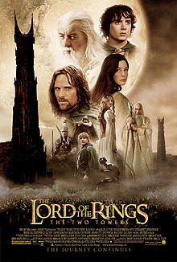
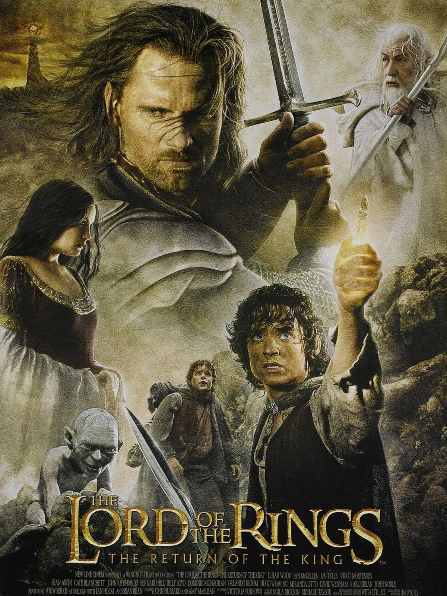

Sevdiğim Filmler
Yüzüklerin Efendisi Yüzük Kardeşliği

Yüzüklerin Efendisi: Yüzük Kardeşliği, dünyanın kaderini değişterecek olan yüzükten kurtulmak için verilen mücadeleyi konu ediyor. Yıllar önce üretilen ve Orta Dünya topraklarına kandan başka hiçbir şey getirmeyen yüzüklerin sonuncusu, üretiminden yüz yıllar sonra ortaya çıkar. Amcasının kendisine emanet ettiği yüzüğün nelere kadir olduğundan habersiz olan Frodo, büyücü Gandalf'ın anlattıkları sonrasında dehşete kapılır.
Bu yüzükten ve müstakbel savaşlardan kurtulmanın tek yolu, gücünü toplamaya çalışan Sauron'u da engellemek için bu yüzüğü yok etmektir. Yüzüğü yok edilebileceği tek yer olan Mordor'a götürmek için kendini feda eden savaşçılardan oluşan bir ekip oluşturulur. Çok uzun ve çetin geçecek olan yolculuk başlar. Orta Dünya'nın kaderi, bu insanların ellerindedir.
Yüzüklerin Efendisi İki Kule

Yüzüklerin Efendisi: İki Kule'de, Yüzük Kardeşliği üyelerinin her birinin, kardeşlik bozulduktan sonra başlarına gelenler anlatılıyor. Kahramanlarımız, gruplar halinde Orta Dünya’nın en tehlikeli yerlerinde maceralar yaşayacaklar, yeni kavimler ve çoktan unutulmuş medeniyetlerle tanışacaklar.
Yüzüklerin Efendisi Kralın Dönüşü

Yüzüklerin Efendisi: Kralın Dönüşü, Tek Yüzük'ün yok edilmesi için verilen mücadeleyi konu ediyor. Sauron'un orduları büyüdükçe büyümektedirler. Frodo ve onun can dostu Sam, korku dolu bir yolculuğun göbeğinde, korkunç Mordor'a adım adım yaklaşmaktadırlar.